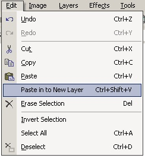

Paste To New Layer Operation
|
 Very similar to the Paste Operation except the Paste To New Layer Operation (Edit-->Paste To New Layer) will first create a new layer and paste the object on the clipboard to that new layer. This new layer will then become active, and the pasted object will be highlighted for the user to use the Move Tool. |